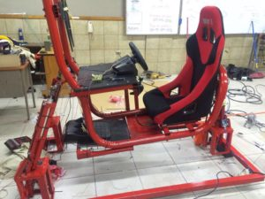
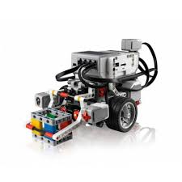

En 2006 inicie mi formacion academica en el instituto Emiliani donde realice toda mi educacion basica y Bachillerato, al salir de noveno grado tenia claro que queria estudiar un tecnico de 3 años por lo que la mejor opcion era un Tecnico en Electronica, fue aqui donde se despertaria el gusto por la programacion y la informatica en general.

Cada año en el instituto se realizaba una exposicion de proyectos enfocados en diferentes areas como la fisica, quimica, biologia, electricidad y por supuestode electronica, donde los estudiantes ponian a prueba todo el conocimiento adquirido durante todo el año.
Universidad
En el año 2018 inicie mi estudio superior en la Universidad Jose Simeon Cañas cursando la carrera de Ingenieria informatica. Decidí tomar esta carrera ya que tenia desde el bachillerato una nocion de la programacion y contacto con algunas tecnologias interesantes, de las cuales tome esas ganas por querer seguir aprendiendo sobre los entornos informáticos en mi siguiente etapa ya en la universidad. Actualmente que estoy en mi segundo año optare por inscribirme en la ICPC la cual es una competencia de programacion de prestigio, donde buscare ampliar mi conocimiento y aprender divirtiendome con lo que me gusta hacer.
Si deseas mas informacion sobre la Competencia de Programacion ICPC dale click en el siguiente link : https://icpc.baylor.edu
Otros Estudios
En mi epoca en bachillerato ademas de mis clases asistia a un curso de robotica donde con legos construia una estrutura para luego desarrollar un pequeño programa el cual le daba vida por completo, ampliando sus funcionalidades considerablemente.

Ya mas recientemente tuve la oportunidad de estudiar un idioma mas especificamente el Ingles, esto para mi es un cosa muy importante en la vida de un informatico, ya que todos o en su mayoria los programas que utiliza estan en este idioma, sin dejar de lado que es muy importante para el crecimiento como profesional.
Experiencia Laboral
En 2017 tuve el acercamiento al mundo laboral de parte del Colegio, debido a que al hacer practicas profesionales a cada estudiante lo envian a una empresa relacionada claramente con el Tecnico que se esta cursando, en mi caso fui enviado a Telecam una empresa que se encarga de Seguridad ya sea con alarmas o con camaras de seguridad, mi labor era acompañar al tecnico en su viaje para ayudarle en lo que se pueda y de vez en cuando interactuar de primera mano con los elementos a instalar o revisar.